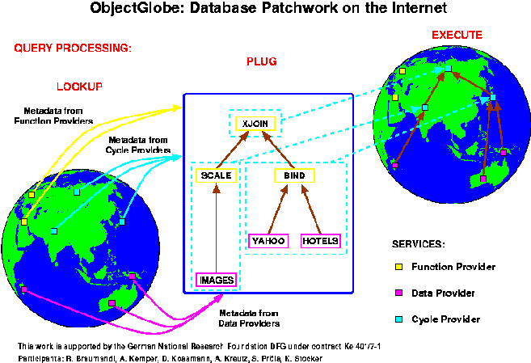

Database Patchwork on the Internet
Overview
The core of our system is a distributed query engine, which is capable of
incorporating services of three different service providers:
- Data provider,
- Function provider and
- Cycle Provider.
The integration of data providers means that wrappers for arbitray data sources
can be loaded dynamically into a running query processor. Through the use of these
wrappers, the data sources are also included dynamically.
Functionality can be included in several different forms:
- Iterator.
- Aggregate function.
- Transformer function.
- Predicate function.
As with wrappers the integration is performed dynamically by loading the
class files from another server.
A cycle provider has to run a Java VM and on it our server program. Since it is
possible to distribute the operators of a query evaluation plan among arbitrary
(known) server processes, queries can exploit the new server at once after the
registration.
The overall correlations of the different kinds of provider are illustrated in the
following picture, which we also used in the form of a poster at the Sigmod 99 conference.

Some Example Plans for a Travel Agency
The following example applications of our system should resemble some activities
needed for a travel agency. The different queries, which can be initiated for the
specific application, are further divided in respect to the features of our system
they exploit, and the way they access the data sources. Since we use mainly normal
WWW data sources, the access to these data sources can be rather slow when the
respective Web server is highly loaded or the network connection to this server
is congested. Therefore we have materialized parts of the data of theses sources
in our local database and for the majority of our example queries there are two
versions. One uses the materialized data and the other (with the (online)
annotation) uses the Web data.
Attention: The pages for the following four links
contain links, which begin with "Initiate query ..." and reference
our online demonstration. By clicking on these links, your browser will contact our
WWW-server at the university of Passau.
A sample session shows the interaction with our
web-based front-end.